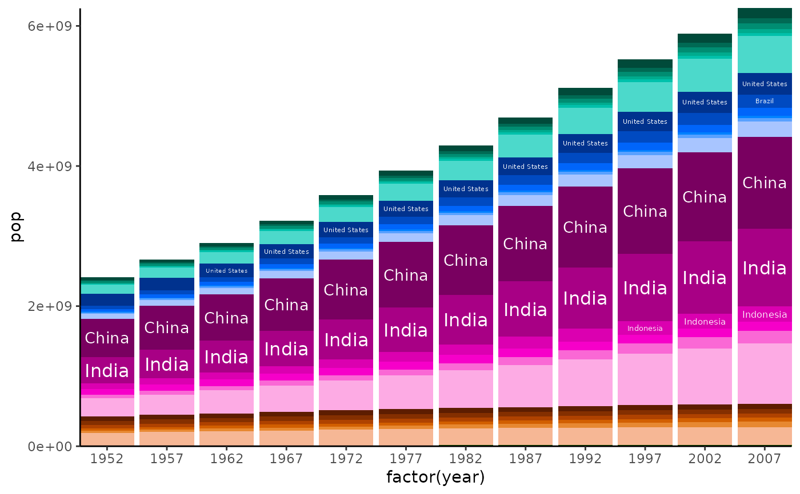
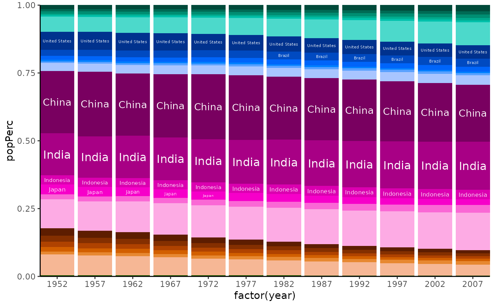
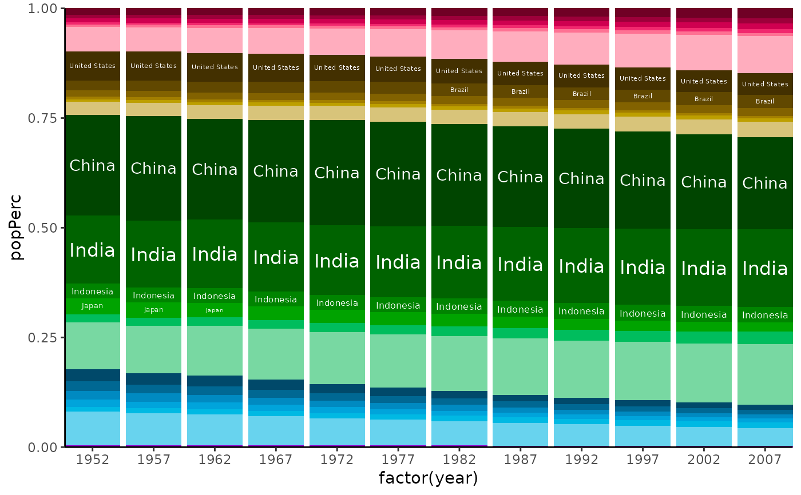

hueGroupPal.RdMakes a palette for dataframe where levels within groups defined by the
group variable share the same hue but different shades, levels within
group based on the shade variable.
hueGroupPal( df, group, shade, maxShades = 5, hues = hueSet(), huePalFun = huePal(), manual = c(Other = "lightgrey") )
| df | dataframe with at least two variables (treated as categories) |
|---|---|
| group | variable name used to assign hues |
| shade | variable name used to assign colour shades of same hue |
| maxShades | maximum allowed number of shades per hue |
| hues | hues available to use for unique levels of |
| huePalFun | function used to create single hue palette for levels of |
| manual | NULL or manual additions or replacements for returned palette
in the style of |
named character vector of colours
#> #>#> #> #>#> #> #>library(ggplot2) # sort countries, within continents, by average population sortedSummary <- gapminder::gapminder %>% group_by(continent, country) %>% summarise(AvPop = mean(pop, na.rm = TRUE), .groups = "keep") %>% group_by(continent) %>% arrange(.by_group = TRUE, desc(AvPop)) # create palettes countryPal6 <- sortedSummary %>% hueGroupPal(group = "continent", shade = "country", maxShades = 6) # plot population per year gapminder::gapminder %>% group_by(year) %>% ggplot(aes( x = factor(year), y = pop, # setting as factor with levels in correct order ensures ordering of bars fill = factor(country, levels = names(countryPal6)) )) + geom_col() + guides(fill = "none") + # setting manual scale of course sets correct colours scale_fill_manual(values = countryPal6) + ggfittext::geom_fit_text( aes(ymin = 0, ymax = pop, label = country), position = "stack", colour = "white" ) + theme_classic() + coord_cartesian(expand = FALSE)# plot population per year as share of world total that year gapminder::gapminder %>% group_by(year) %>% mutate(popPerc = pop/sum(pop, na.rm = TRUE)) %>% ggplot(aes( x = factor(year), y = popPerc, # setting as factor with levels in correct order ensures ordering of bars fill = factor(country, levels = names(countryPal6)) )) + geom_col() + guides(fill = "none") + # setting manual scale of course sets correct colours scale_fill_manual(values = countryPal6) + ggfittext::geom_fit_text( aes(ymin = 0, ymax = popPerc, label = country), position = "stack", colour = "white" ) + theme_classic() + coord_cartesian(expand = FALSE)# plot with modified palette countryPal6alt <- sortedSummary %>% hueGroupPal(group = "continent", shade = "country", maxShades = 6, hues = hueSet(start = 0)) gapminder::gapminder %>% group_by(year) %>% mutate(popPerc = pop/sum(pop, na.rm = TRUE)) %>% # dplyr::filter(year > 1970) %>% ggplot(aes( x = factor(year), y = popPerc, # setting as factor with levels in correct order ensures ordering of bars fill = factor(country, levels = names(countryPal6alt)) )) + geom_col() + guides(fill = "none") + # setting manual scale of course sets correct colours scale_fill_manual(values = countryPal6alt) + ggfittext::geom_fit_text(grow = TRUE, aes(ymin = 0, ymax = popPerc, label = country), position = "stack", colour = "white" ) + theme_classic() + coord_cartesian(expand = FALSE)